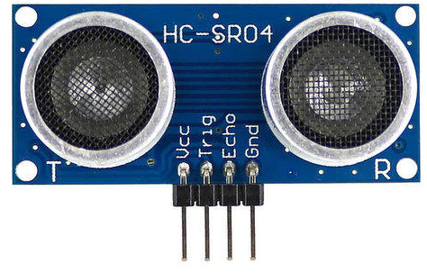

The HC-SR04 ultrasonic sensor is a popular choice for parking assistance systems due to its reliability, accuracy, and ease of use. Here are some factors that contribute to the quality of the HC-SR04 sensor for parking applications: Accuracy: The HC-SR04 sensor provides accurate distance measurements, making it suitable for detecting objects in parking spaces with precision. It uses ultrasonic waves to measure distances and can typically detect objects within a range of 2cm to 400cm with an accuracy of about 3mm. Range: The HC-SR04 sensor has a wide detection range, allowing it to detect objects at varying distances from the sensor. This range is particularly useful for parking applications, where vehicles may be parked at different distances from the sensor. Reliability: HC-SR04 sensors are known for their reliability and consistent performance. They are built with quality components and undergo thorough testing to ensure durability and long-term reliability in parking environments. Ease of Use: HC-SR04 sensors are easy to install and integrate into parking systems. They require minimal setup and configuration, making them suitable for both DIY projects and commercial parking solutions. 